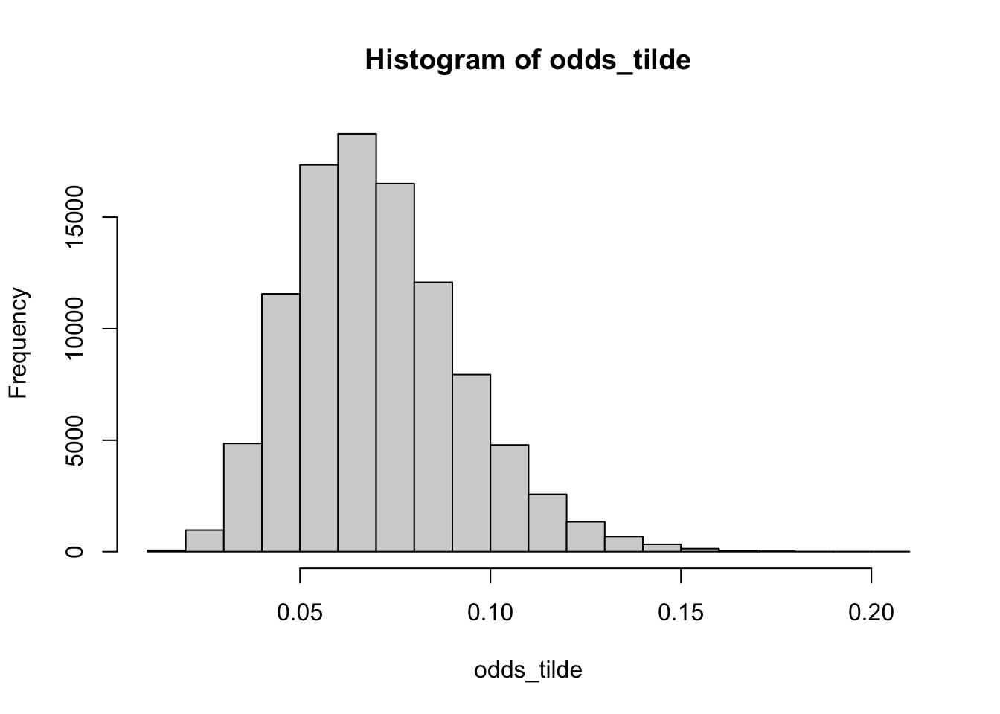
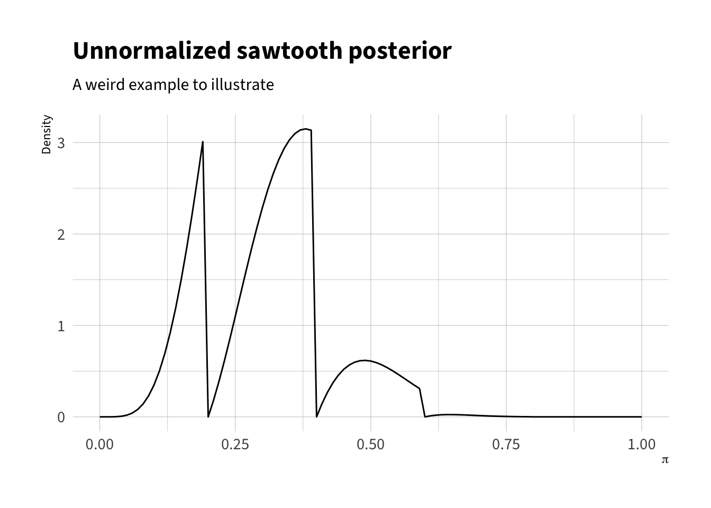

In the previous chapter, we saw that in simple cases, especially when we use conjugate priors, we can find a closed-form posterior. But in most applied cases, we can only sample from the posterior distribution. It might be counter-intuitive that it can be easy to sample from a distribution without a closed form, but it’s true!
In this course, we’ll look at four samplers:
rejection
approximate posterior simulation
Metropolis
Hamiltonian Monte Carlo
The algorithms start simple and intuitive and build in complexity. A deep dive on HMC–especially the hyper-optimized version used by Stan–is beyond the scope of this course. That said, HMC via Stan and it universe of enablers in R have made posterior simulation almost trivial.
17.1 Equivalence
Before jumping into sampling algorithms, let’s demonstrate the correspondence between sampling and closed-form results.
In the case of the toothpaste cap, problem we have a Bernoulli model, beta prior, and beta posterior from the previous chapter. For the prior, let’s suppose \(\alpha = 3\) and \(\beta = 15\). Regardless of the summary we are interested in (e.g., mean, SD, percentiles), we can work with the closed-form result or simulations to obtain the same answer. Notice that even for this very simple closed-form result, the simulations perhaps easier to work with!
It’s trivial for us to simulate from the beta posterior using the rbeta() function.1 And the summaries we might want are easy to compute using closed-form results. Let’s compare the two approaches.
1 This makes it a good first example, since the correspondence between rbeta() and dbeta() is obvious. In more interesting cases, the simulation will be harder.
# prior parametersalpha_prior <-3beta_prior <-15# data k <-8N <-150# posterior parametersalpha_posterior <- alpha_prior + kbeta_posterior <- beta_prior + N - k# for compact calculations belowa1 <- alpha_posteriorb1 <- beta_posterior# posterior simulation; trivialn_sims <-100000pi_tilde <-rbeta(n_sims, shape1 = a1, shape2 = b1)# posterior meana1 / (a1 + b1) # closed form
For ML estimators, we have the invariance property. The invariance property allows us to freely transform our ML estimates. But can we say something similar about Bayesian point estimates, like the posterior mean? Kinda, but it works slightly differently.
Invariance Property of ML Estimators. Suppose an ML estimator \(\hat{\theta}\) of \(\theta\) as in Definition 1.1 and a quantity of interest \(\tau = \tau(\theta)\) for any function \(\tau\). The ML estimate \(\hat{\tau}\) of \(\tau = \tau(\theta)\) is \(\tau(\hat{\theta})\).
17.2.1 The Incorrect Way
First, there is something that we might want to do, but cannot.
Cannot transform posterior mean
Suppose a posterior mean \(\hat{\theta}_{mean}\) and a transformation \(\tau = \tau(\theta)\). Suppose we want the posterior mean of the transformation \(\hat{\tau}_{mean}\).
\[
\hat{\tau}_{mean} \neq \tau \left( \hat{\theta}_{mean} \right)\text{, except in special cases.}
\]
This means: we cannot freely transform posterior means.2
2 I suppose we can, but what we get out of this process isn’t also a posterior mean.
However, there is a way to obtain the posterior mean of the transformation. Theorem 17.1 tells us how. It comes down to the order of operations.
17.2.2 The Correct Way
Instead of transforming the posterior mean, you need to transform the simulations, then take the mean.
Theorem 17.1 (Simulation-Based Invariance Property of Posterior Distributions) Suppose \(\{\tilde{\theta}^{(s)}\}_{s=1}^S\) are posterior simulations of \(\theta\). Let \(\tau = \tau(\theta)\) be a quantity of interest for any function \(\tau\). Then posterior simulations of \(\tau\) can be obtained by applying \(\tau\) to each draw \(\tilde{\theta}^{(s)}\) so that \(\tilde{\tau}^{(s)} = \tau \left( \tilde{\theta}^{(s)} \right)\). Summaries of the posterior distribution of \(\tau\) (e.g., mean, median, credible intervals) are obtained by summarizing the transformed draws \(\{\tilde{\tau}^{(s)}\}_{s=1}^S\).
Importantly, if you transform the posterior mean of the parameter, you no longer have posterior mean. (Same for the median.) Instead, you must transform each simulation before taking the mean.3
3 This difference will usually be small, but Jensen’s inequality still applies.
We can illustrate the the wrong way (average then transform) and the right way (transform then average). If we compute the odds (of success) \(\pi/(1 - \pi)\), then the right way and wrong way give similar answers.
# find posterior mean of pimean_pi <-mean(pi_tilde)# wrong way; can't transform posterior meansmean_pi/(1- mean_pi) # NOT the posterior mean of the odds
[1] 0.07002067
# right way; transform then averageodds_tilde <- pi_tilde/(1- pi_tilde)mean(odds_tilde) # the posterior mean of the odds
[1] 0.07046881
But if we compute the odds of failure\((1 - \pi)/\pi\), then we get noticeably different answers.
# wrong way; can't transform posterior means(1- mean_pi)/(mean_pi) # NOT the posterior mean of the odds
[1] 14.2815
# right way; transform then averageodds_of_failure_tilde <- (1- pi_tilde)/pi_tildemean(odds_of_failure_tilde) # the posterior mean of the odds
[1] 15.71027
This happens because the posterior distributions for the odds of success and the odds of failure are skewed differently.
hist(odds_tilde)

hist(odds_of_failure_tilde)
17.3 Rejection Sampling
For more difficult posteriors, we can use algorithms designed to sample from complicated distributions. Most algorithms, including Stan’s hyper-optimized4 implementation of HMC, use a form of reject.
4 My description; not a technical term.
5 This rejection sampling is rarely useful in practice. It turns out that Stan has made most sampling easy. But the rejection algorithm does highlight the intuition of more complicated algorithms that Stan uses.
To highlight how rejection can help us sample from complicated distributions, let’s look at a simple rejection algorithm that relies entirely on rejection.5
Algorithm: Rejection Sampling
To make the rejection algorithm simple, I’ve written it to apply specifically to the posterior for the Bernoulli model, which has support \([0, 1]\). The target density doesn’t need to be a posterior and can have support other than \([0, 1]\). The proposal distribution doesn’t have to be uniform. The key is that \(M\) is larger than the maximum of the target distribution and draws are accepted with probability \(f(z)/M\).
Inputs:
The unnormalized posterior distribution \(f(\pi \mid y)\) on [0,1].
Desired number of draws \(S\).
An envelope constant \(M\) that is larger than \(f(\pi)\) for all \(\pi\). For our simple 1D cases, we can plot the posterior and select \(M\) visually. We could also use use optim() to find the posterior mode.
Algorithm:
Initialize: Set \(s=1\).
Repeat until \(s=S\):
Propose \(z \sim \text{uniform}(0,1)\).
Draw \(u \sim \text{uniform}(0,1)\). Used to control reject/accept rates.
Accept–reject step:
If \(u \le \dfrac{f(z)}{M}\), accept. Set \(\pi^{(s)} = z\) and update \(s \leftarrow s+1\). Because \(u\) is uniform, this accepts with probability \(\dfrac{f(z)}{M}\).
The figure below shows the logic of the rejection algorithm assuming a \(\pi \sim \text{beta}(4, 10)\) target distribution. We set \(M = 4\) visually, but notice that we could set it at to 3.5 as well. We’ll generate proposals from a uniform distribution, but accept those proposals a different rates depending on the posterior density at that proposal.
The code below implements the rejection algorithm shown in the figure above.
rej <-function(f, S, M) {# record start time start_time <-Sys.time()# create containers and initialize counters samples <-numeric(S) # container to store samples rejects <-NULL# container to track rejected values; for teaching; slow! s <-1# currently trying to take sample 1 n_prop <-0# count proposals (for an acceptance-rate message)# so long as the current sample s is less # than the desired samples S.# do the following:while (s <= S) { # A: propose z ~ uniform(0,1) z <-runif(1)# B: draw u ~ uniform(0,1) u <-runif(1)# C: Accept or reject fz <-f(z) # compute once, for effeciency## scenario 1: u <= f(z)/M → Acceptif (u <= fz / M) { samples[s] <- z s <- s +1 } ## scenario 2: f(z) > M → shouldn't happen; errorif (fz > M) stop("Stop: Envelope M is too small.") # find appropriate M## scenario 3: u > f(z)/M → Reject## tracking these values just for teaching and learning--not needed usuallyif (u > fz / M) { rejects <-c(rejects, z) }# track total proposals so far n_prop <- n_prop +1 }# print a summary reportmessage(paste0("💪 Successfully generated ", scales::comma(S), " samples! 🎉\n\n","✅ Accepted samples: ", scales::comma(S), "\n","❌ Rejected samples: ", scales::comma(length(rejects)), "\n","﹪ Acceptance rate: ", scales::percent(S / n_prop, accuracy =1), "\n","⏰ Total time: ", prettyunits::pretty_dt(Sys.time() - start_time) ) )# returnlist(n_prop = n_prop,acc_rate = S / n_prop,samples = samples,rejects = rejects )}
# example unnormalized target distribution# bernoulli likelihood times sawtooth prior# rescaled by 10,000 to make values sensiblef <-function(z) {10000*z^4* (1- z)^10*prior_saw(z) }

# perform samplingr <-rej(f, 10000, 4)
We can create a histogram of the posterior distribution, which has a very unusal shape.
Code
bind_rows(data.frame(type ="Accepted", values = r$samples),data.frame(type ="Rejected", values = r$rejects)) |>mutate(type =factor(type, levels =c("Rejected", "Accepted"))) |>ggplot(aes(fill = type, x = values)) +geom_histogram(binwidth =1/50, boundary =0) +theme_ipsum(base_family ="Source Sans 3") +scale_fill_manual(values =c("#e41a1c", "#377eb8")) +labs(x =expression(pi), y ="Count", fill ="Result")
We can also compute the mean, SD, and 90% equal-tailed credible interval.